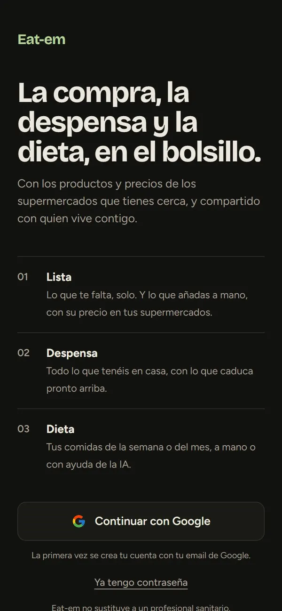

App 01 · PWA
Eat-em
La compra, la despensa y la dieta, en el bolsillo.
App para el móvil que se comparte con quien vives: sabe qué te falta, qué tienes en casa y qué vas a comer, con los productos y precios de los supermercados que tienes cerca.
- Lista compartida en tiempo real, con dónde sale más barato
- Despensa con caducidades, avisos y escáner de código de barras
- Dieta semanal o mensual que la IA rellena según tu perfil, con salvaguardas de salud
- Scrapers diarios de precios en GitHub Actions, cruzados con Open Food Facts
~80.000productos
5cadenas de súper
~18.900tiendas en el mapa
Next.jsReactTypeScriptSupabaseTailwindGitHub ActionsVercelIA
